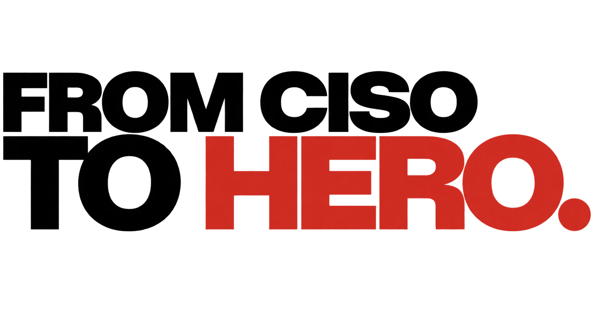

No bullshit!
Just quality.
Wir sind wescaleIT. Das gemeinsame Zuhause von FCTH, Silverback und Psoydo.
Unsere Marken
Dein Thema. Deine Marke.

Informationssicherheit
Für Unternehmen, die Informationssicherheit aufbauen, im Alltag umsetzen und wirksam weiterentwickeln wollen.
Das Unternehmen dahinter
Drei Marken.
Eine gemeinsame Haltung.
wescaleIT AG ist das gemeinsame Unternehmensdach für FCTH, Silverback und Psoydo. Von unserem Standort in Ulm aus verbinden wir unterschiedliche Themen mit einem Anspruch: gute Arbeit, klare Worte und Menschen, auf die man sich verlassen kann.
Jede Marke hat ihren eigenen Schwerpunkt. Deshalb findest du die fachlichen Angebote direkt auf ihrer Website. Hier lernst du das Unternehmen und die Menschen dahinter kennen.
Wir sprechen Probleme an, übernehmen Verantwortung und hören auf die beste Idee. Wer so arbeiten möchte, findet bei wescaleIT den Einstieg ins Team.
Unsere Haltung. Unser Team.Offene Stellen und dein Einstieg